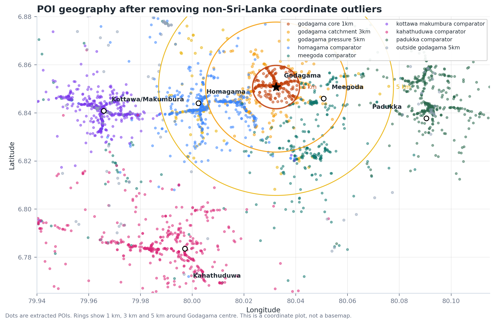
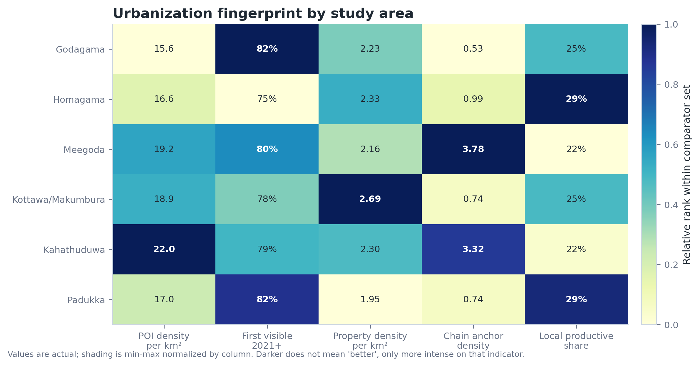
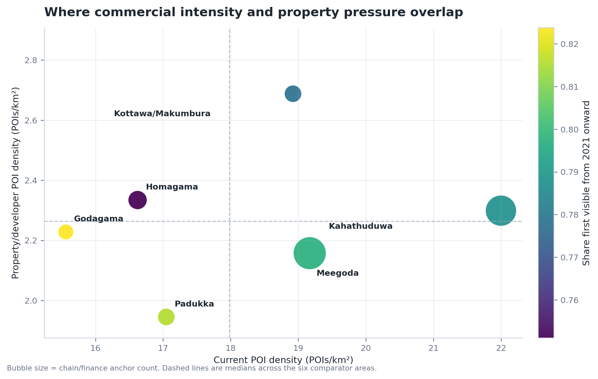
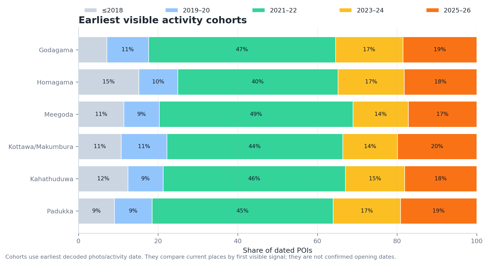
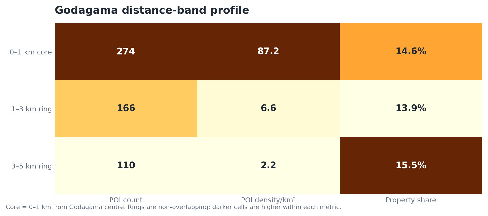
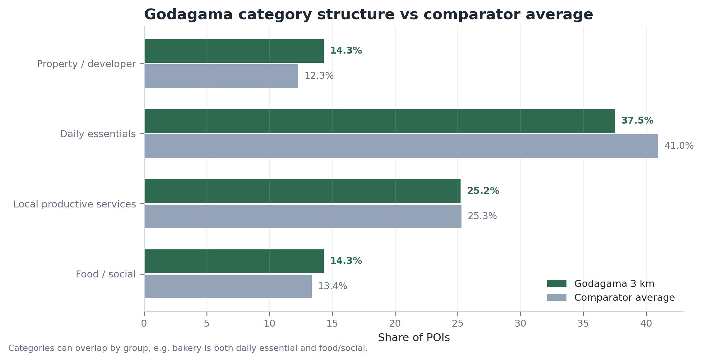
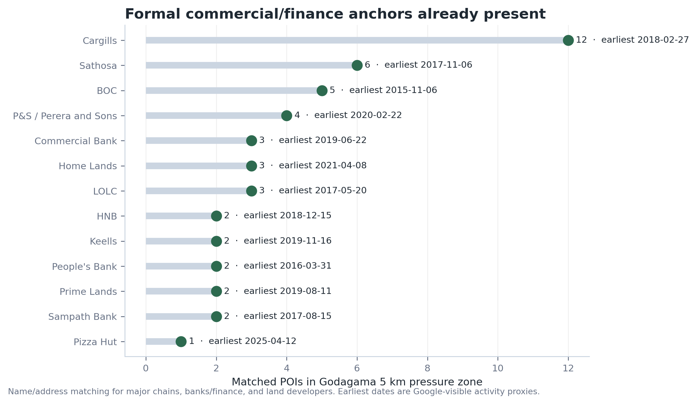
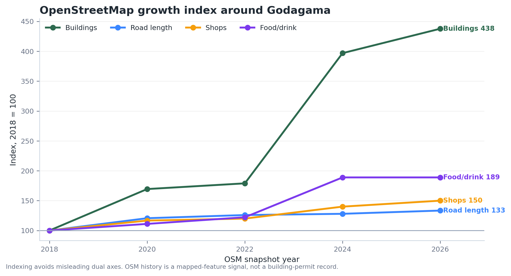

දිනය: 2026-06-27
අධ්යයන ප්රදේශය: ගොඩගම නගරය, කොළඹ දිස්ත්රික්කය, බස්නාහිර පළාත, ශ්රී ලංකාව.
පර්යේෂණ ගබඩාව: Urbanization Research. ගොඩගම මෙහි පළමු
නගර/පොඩි නගර සිද්ධි අධ්යයනයයි.
පොදු repo: https://github.com/minzique/urbanization-research
මෙම වාර්තාවේ අරමුණ ගොඩගම අවට නගර ගතිය වැඩි වෙමින් යන ආකාරය මැනීමයි. ඒ සඳහා එකම දත්ත මූලාශ්රයකට පමණක් සීමා නොවී, Google Maps වලින් ගත් ස්ථාන දත්ත, OpenStreetMap ඉතිහාසය, UDA/RDA සැලසුම් ලේඛන, අධිවේගී මාර්ග හා interchange සම්බන්ධතාව, ඉඩම් සංවර්ධකයන්ගේ වෙළඳපොළ සංඥා, සහ ඉදිරි අදියරකදී භාවිතා කළ හැකි ජනගහන/සැටලයිට් දත්ත මූලාශ්ර එකට බලන ලදී.
මෙය අදහස් පදනම් කරගත් වාර්තාවක් නොවේ. පහත යෝජනා දත්තයෙන් පෙනෙන රටාවට සෘජුව සම්බන්ධ ඒවා පමණි.
| දත්ත ස්තරය | එයින් බලන්නේ කුමක්ද | මෙම වාර්තාවේ තත්ත්වය | ප්රධාන සීමාව |
|---|---|---|---|
| Google-derived POI | දැනට ඇති කඩ, සේවා, බැංකු, ආහාර ස්ථාන, ඉඩම්/සංවර්ධක ලකුණු සහ ඒවා online පළමුව පෙනුණු කාලය | ශ්රී ලංකාවෙන් පිට coordinate එකක් ඉවත් කළ පසු භූගෝලීයව වලංගු ස්ථාන 3,494ක් | පළමු photo/activity දිනය යනු නිල opening date එකක් නොවේ |
| OpenStreetMap / ohsome | කාලයත් සමඟ ලකුණු වූ ගොඩනැගිලි, පාරවල්, කඩ, ආහාර/පාන ස්ථාන | 2014–2026 කාල සටහන් දත්ත ලෙස භාවිතා කර ඇත | OSM එකට කවුරුන් කවදා ලකුණු කළාද යන්න බලපායි |
| UDA Homagama Development Plan | නිල zoning, town hierarchy, පරිසර ආරක්ෂණ කලාප, guide-plan ප්රදේශ | ගොඩගම HD Commercial Zone III, කහතුඩුව HD Commercial Zone II, wetland/paddy controls ලෙස සලකා ඇත | ඉඩම් කැබලි මට්ටමට GIS polygon extract කිරීම තවම නැත |
| RDA / Exway / gazettes | අධිවේගී මාර්ග ඉතිහාසය, interchanges, ප්රවාහන corridor තත්ත්වය | OCH, Southern Expressway සහ Central Expressway සැසඳුම් node ලෙස සලකා ඇත | නිශ්චිත interchange/GIS layers තවම model එකට එකතු කර නැත |
| Developer market signals | ඉඩම් සංවර්ධකයන් highway access සහ “future value” කියා වෙළඳපොළට පෙන්වන ආකාරය | qualitative ලෙසත් Google land-development POI හරහාත් සලකා ඇත | සම්පූර්ණ perch price/time-series scrape එක තවම නැත |
| DCS Census Portal / district handbooks | ජනගහනය, නිවාස, රැකියා, local authority පසුබිම | ඉදිරි අදියර සඳහා මූලාශ්රය හඳුනාගෙන ඇත | DS/GN මට්ටමේ 2012–2024 දත්ත තවම ගණනයට එකතු කර නැත |
| GHSL / WorldPop / VIIRS | built-up land, ජනගහන පැතිරීම, රාත්රී ආලෝකය | ඉදිරි model expansion සඳහා source stack එක ලෙස හඳුනාගෙන ඇත | මෙම ගොඩගම ගණනයට තවම raster metrics ඇතුළත් කර නැත |

මෙම heatmap එකේ අඳුරු කොටු, ඒ දර්ශකය අනුව සාපේක්ෂව ඉහළ අගයක් ඇති ප්රදේශ පෙන්වයි. කොටුව තුළ ඇති අංකය සැබෑ අගයයි.

මෙය ඉඩම් මිල අනාවැකියක් නොවේ. මෙය ඉක්මනින් අවධානය යොමු කළ යුතු ප්රදේශ හඳුනාගැනීමට score එකකි. බර තැබීම: POI density 35%, 2021න් පසු පළමුව පෙනුණු share 25%, property/developer density 25%, chain/finance anchor density 15%.

| ප්රදේශය | ස්ථාන | කි.මී²කට ස්ථාන | 2021න් පසු පෙනුණු share | Property share | Property ස්ථාන | දෛනික සේවා ස්ථාන | Score |
|---|---|---|---|---|---|---|---|
| ගොඩගම | 440 | 15.6 | 82.4% | 14.3% | 63 | 111 | 34.5 |
| හෝමාගම | 470 | 16.6 | 75.1% | 14.0% | 66 | 137 | 21.0 |
| මීගොඩ | 542 | 19.2 | 79.7% | 11.3% | 61 | 117 | 57.6 |
| කොට්ටාව/මාකුඹුර | 535 | 18.9 | 77.8% | 14.2% | 76 | 135 | 53.6 |
| කහතුඩුව | 622 | 22.0 | 78.7% | 10.5% | 65 | 136 | 72.2 |
| පාදුක්ක | 482 | 17.0 | 81.5% | 11.4% | 55 | 138 | 31.2 |

2021–2022 කොටස සියලුම ප්රදේශවල විශාලයි. ඒක ඇත්ත ව්යාපාර/සේවා වැඩිවීමත්, Google photo coverage වැඩිවීමත් දෙකම එකට පෙන්වන signal එකක් ලෙස බලන්න. ඒත් එකම extraction ක්රමය සියලුම ප්රදේශවලට යොදා ඇති නිසා ප්රදේශ අතර සැසඳීම ප්රයෝජනවත්ය.

කි.මී. 1 මධ්ය ප්රදේශයේ density වැඩිය. කි.මී. 1–5 අතර පරාසවල density අඩු වුවත් ඉඩම්/සංවර්ධක පීඩනය පෙනේ. ඒ නිසා ගොඩගමට town centre management එකත්, පිටත ring growth guidance එකත් දෙකම අවශ්යය.

ගොඩගම කියන්නේ ආහාර කඩ හෝ commuting suburb එකක් පමණක් නොවේ. දත්තවල daily essentials, clinics, hardware, vehicle service, electronics, courier, apartments, land development වගේ මිශ්ර සේවා පෙනේ. ඒ නිසා මෙය එක sector එකකට සීමා නොකර, ප්රායෝගික local enterprise town එකක් ලෙස බැලිය යුතුය.

| Anchor | ගොඩගම කි.මී. 5 පරාසයේ හඳුනාගත් ස්ථාන | මුලින්ම පෙනුණු දිනය |
|---|---|---|
| Cargills | 12 | 2018-02-27 |
| Sathosa | 6 | 2017-11-06 |
| BOC | 5 | 2015-11-06 |
| P&S / Perera and Sons | 4 | 2020-02-22 |
| Commercial Bank | 3 | 2019-06-22 |
| Home Lands | 3 | 2021-04-08 |
| LOLC | 3 | 2017-05-20 |
| HNB | 2 | 2018-12-15 |
| Keells | 2 | 2019-11-16 |
| People’s Bank | 2 | 2016-03-31 |
| Prime Lands | 2 | 2019-08-11 |
| Sampath Bank | 2 | 2017-08-15 |
| Pizza Hut | 1 | 2025-04-12 |

OpenStreetMap ඉතිහාසය building permit record එකක් නොවේ. නමුත් එයින් physical growth එකේ දිශාව සහ ප්රමාණය ගැන හොඳ signal එකක් ලැබේ. 2018–2026 අතර ගොඩනැගිලි සහ මාර්ග වර්ධනය, subdivision/build-out වාණිජ පරිණතියට පෙර එන බවට ගැලපෙන රටාවක් පෙන්වයි.
| සොයාගැනීම | භාවිතා කළ සාක්ෂි | planning/model අදහස |
|---|---|---|
| ගොඩගම passive sprawl එකක් පමණක් නොවේ | UDA Homagama plan එකේ ගොඩගම High-Density Commercial Zone III ලෙස හඳුනාගෙන ඇත | ගොඩගම official intensification node එකක් ලෙස ගන්න |
| කහතුඩුව interchange comparison එකට ශක්තිමත් ප්රදේශයක් | UDA plan එකේ කහතුඩුව High-Density Commercial Zone II සහ guide-plan area එකක්; කහතුඩුව interchange එක Homagama PS තුළ ඇත | interchange-driven growth සඳහා කහතුඩුව near-future comparator එකක් ලෙස භාවිතා කරන්න |
| Highway access වෙළඳපොළ භාෂාව වෙනස් කරයි | Prime Lands Dagny Godagama: Makumbura/Athurugiriya access; Landify Homagama: Kottawa hub/highway exit; Home Lands: interchange proximity | Developer listings ඉඩම් මිල හා subdivision pressure සඳහා early warning signal එකක් |
| පරිසර සීමා පැහැදිලිය | UDA plan එකේ Wetland Nature Conservation Zone සහ Paddy/Wetland Agricultural Zone ඇත | outer-ring approvals වලට පෙර protect/guide/intensify zones map කරන්න |
| Central Expressway මෙහි main driver එක නොව comparator එකකි | Mirigama/Kurunegala වැනි CE Phase II nodes interchange-led peri-urban land products පෙන්වයි | commercial maturity එන්න පෙර land products පෙනෙන ආකාරය සැසඳීමට භාවිතා කරන්න |
| Developer / project signal | දත්තවලින් පෙනෙන දේ | භාවිතය |
|---|---|---|
| Prime Lands — Dagny Godagama | High Level Road, Godagama Junction, Meegoda Economic Centre, Makumbura/Athurugiriya access සමඟ “rapidly developing” ලෙස market කර ඇත; perch එක LKR 1,240,000 සිට | ගොඩගම ඉඩම් වෙළඳපොළ පීඩනයට සෘජු signal එකක් |
| Prime Lands — Landify Homagama | Homagama town, Kottawa Multimodal Hub, Kottawa Highway Exit අසල බව market කර ඇත; perch එක LKR 2,250,000 සිට | comparator price/access signal එකක් |
| Prime Lands — Ever Green Kahathuduwa | Kahathuduwa interchange access මත market කර ඇත | interchange-led comparator signal එකක් |
| Home Lands inventory/API | Meepe, Kahathuduwa, Athurugiriya/Panagoda, Mirigama projects වල blocks, availability, prices/access claims ලැබී ඇත | absorption සහ price-pressure model එකට ප්රයෝජනවත් |
පොදු repo: https://github.com/minzique/urbanization-research
Display title: Urbanization Research
පළමු case folder: cases/godagama-10200/
පොදු repo එක, source notes, report assets සහ case-study data බලන්න scan කරන්න.
පොදු repo එකේ ඇතුළත් දේ:
| English term | Sinhala term used here | සරල තේරුම |
|---|---|---|
| Urbanization | නාගරිකරණය / නගර ගතිය වැඩි වීම | ගමක් හෝ අඩු නගර ප්රදේශයක් වැඩි buildings, shops, services, traffic, land subdivision සහිත නගර ගතියකට යාම |
| POI / point of interest | සිතියමේ ලකුණු වූ ස්ථානය / සේවා ස්ථානය | කඩයක්, බැංකුවක්, clinic එකක්, school එකක්, restaurant එකක්, fuel station එකක් වැනි map එකේ පෙනෙන ස්ථානයක් |
| Catchment | අවට සේවා පරාසය | නගරයක කඩ, සේවා, පාරවල්, රැකියා භාවිතා කරන අවට ප්රදේශය |
| Core | මධ්ය ප්රදේශය | නගරයේ මැද කොටස. මෙහි ගොඩගම junction/station අවට කි.මී. 1 ප්රදේශය |
| Pressure zone | වර්ධන පීඩන කලාපය | අලුත් ඉඩම් විකිණීම්, කඩ, පාරවල්, සේවා වැඩිවන නිසා development pressure පෙනෙන ප්රදේශය |
| First visible date | මුලින්ම දත්තවල පෙනුණු දිනය | extracted online/photo දත්තවල ස්ථානයක් පළමුව පෙනුණු දිනය. මෙය නිල opening date එකක් නොවේ |
| Comparator area | සැසඳුම් ප්රදේශය | ගොඩගම සමඟ බලන කහතුඩුව, මීගොඩ, කොට්ටාව/මාකුඹුර වැනි වෙනත් ප්රදේශයක් |
| OSM / OpenStreetMap | OpenStreetMap / විවෘත සිතියම් දත්ත | මහජන contributors ලකුණු කරන public map database එකක් |
| ohsome | OSM ඉතිහාස දත්ත සේවාව | OpenStreetMap දත්ත කාලයත් සමඟ වෙනස් වූ ආකාරය summarize කරන සේවාවක් |
| UDA | නාගරික සංවර්ධන අධිකාරිය | Sri Lanka Urban Development Authority; official urban planning authority එක |
| RDA | මාර්ග සංවර්ධන අධිකාරිය | Sri Lanka Road Development Authority; ප්රධාන මාර්ග authority එක |
| GN / DS | ග්රාම නිලධාරී / ප්රාදේශීය ලේකම් මට්ටම් | ශ්රී ලංකාවේ administrative levels දෙකක් |
| GHSL / WorldPop / VIIRS | ගෝලීය ජනාවාස / ජනගහන / රාත්රී ආලෝක දත්ත | built-up land, population distribution, night-time lights බලන global datasets |
| Chain anchor | ප්රධාන ජාල වෙළඳ/මුදල් සේවා ස්ථානය | Keells, Cargills, bank branch වැනි නගර සේවා ශක්තිය පෙන්වන chain/store/finance branch එකක් |
| Productive-service POIs | දෛනික අවශ්යතා සපයන සේවා ස්ථාන | hardware, repair, vehicle service, clinics, courier, food වැනි household සහ small business support කරන සේවා |
| Land-price-per-perch | පර්චසයක ඉඩම් මිල | ශ්රී ලංකාවේ ඉඩම් විකිණීමේදී බහුලව භාවිතා වන perch එකකට කියන මිල |